研究環境
- 長尾研究室では全員，自分専用のパーティションブースと，自分専用のコンピュータを2～3台以上持ち（長尾研PC保有台数：200台以上！（ただし現在は節電中のため利用台数は自己規制中）），自由な環境の中で伸び伸びと研究生活を送っています．
- 総合研究棟の学生室はフローティングフロア（ケーブルなどを床下に入れてワイヤリングを容易にした床），大容量電源，ディスプレイへの写り込みが少ないOA照明，24時間稼動高性能エアコン，熱交換機能付換気装置，150インチ以上の大型スクリーンと6200ルーメンの高輝度フルスペック（1920×1200）ハイビジョンプロジェクター，5.1ch音響システム，3D立体プロジェクターを常備したミーティングコーナーなどを備えた，全国的に見ても非常に恵まれた情報系の研究環境です．これは”情報系研究室にとって，ミーティング/ディスカッションスペース・デスク環境などは重要な研究・実験環境”という長尾教授の基本ポリシーによるものです．
- ぜひ一度，総合研究棟のS404（長尾教官室），S312（知能情報システム研究室（長尾研究室））に見学においで下さい．
エントランス
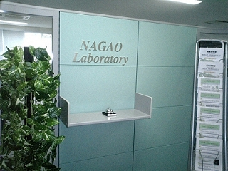
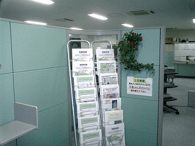
長尾研究室の第一研究室のエントランスは，まるで最先端のＩＴ企業のように綺麗に整備されています． ご来訪者の方は入り口から入って呼び鈴を鳴らして下さい．秘書か学生が応対いたします．横に並んでいるのは産業応用寄りの成果を紹介するカタログで，お持ち帰り自由です．
第一研究室
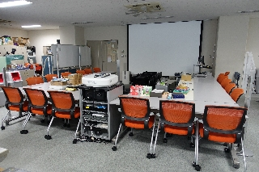
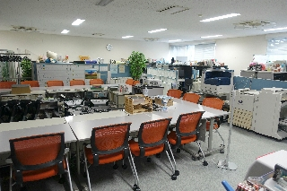
第一研究室は開放的な配置となっており，150インチ以上のスクリーンと6200ルーメンの高輝度ハイビジョン液晶プロジェクター，3D立体プロジェクターを常設したミーティングスペースが室内に完備されていますから，いつでも部屋の電灯をつけたままミーティングを行なうことができます． 研究室輪講やグループミーティングはここで行なうことが多いです．
学生研究スペース
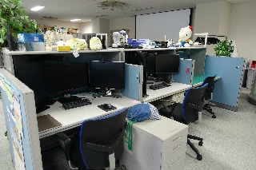
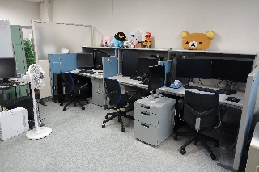
長尾研究室では，学部３年生（早期卒業生・飛び級生）・４年生（卒研生）からそれぞれブース形式の机が与えられています．また，研究テーマが近い学生が周囲に居るように配置されているため，個人的な研究とグループでのミーティングがシームレスになった環境となっています．グループミーティングのための移動テーブルやホワイトボードが随所に配置されています．これが情報系研究室の最適配置です．ただブースを並べただけでは“孤独な”研究環境になってしまいます．全員22インチ以上の液晶ディスプレイを何台でも利用可能です．
博士後期課程学生用環境
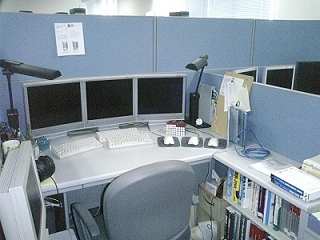
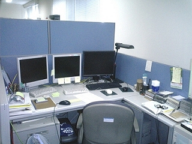
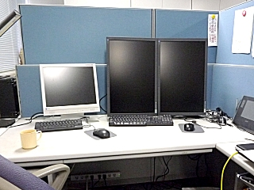
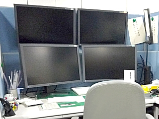
博士後期課程学生には，Ｌ型机によるブースや，博士前期課程学生よりも広いスペースが与えられています．計算機や液晶ディスプレイも必要なだけ利用することができます．時には縦型液晶ディスプレイやマルチディスプレイにアレンジして，個性を出す博士後期課程学生も居ます．
学生用歓談コーナー・実験装置
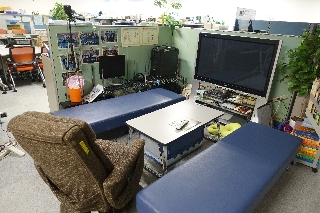
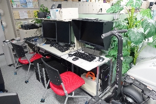
研究室内には学生用の歓談コーナ（左の写真）も設けられています．右の写真は実験装置の例です．右側から乗用移動台車，視線検出装置，医学画像用表示ディスプレイです． これら以外にも脳波計や赤外線カメラなどの多数の実験装置を完備しています．
参考文献閲覧コーナー・書庫
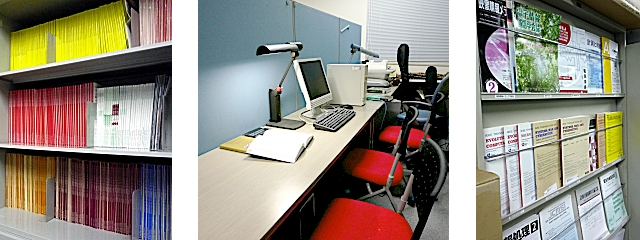
研究室内には，関連する国内外の学会誌（写真左）や，洋書・和書の専門図書が完備されており，学生はいつでもそれらを閲覧することができます（写真中央）．最新論文誌のコーナ（写真右）もあります．“書籍は研究環境の一部”という長尾教授のポリシーにより，必要な書籍は何でもすぐに購入してもらえます．
プリンタ・加湿機能付空気清浄機
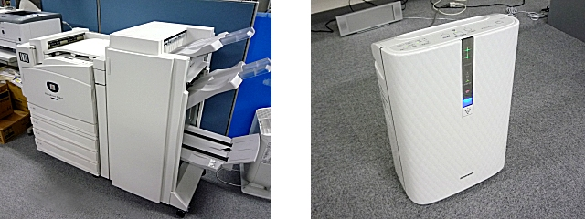
長尾研には非常に高性能なカラープリンター（写真左）や超高速プリンタなど，多数のプリンタがあり，学生はそれらをいつでも自由に利用することができます．また，加湿機能付空気清浄機（写真右）や加湿器が各室に複数台ずつ設置されており，研究室内の空気はいつも清浄で快適な状態に維持されています．
第二研究室
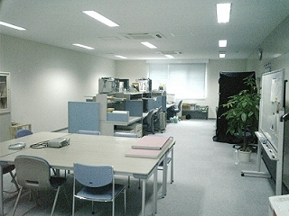
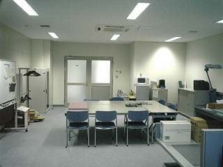
第二研究室も落ち着いた研究環境となっています．視覚実験用ブース（左の写真の黒い箱）やミーティングスペース，仮眠スペースなどがあります． 共同研究のための実験システムなどはこちらで組むことが多いです．
学生研究スペース（第二研究室）
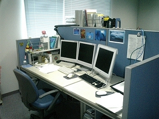
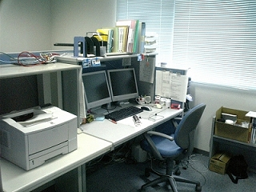
第二研究室も，学生個々のプライバシーを尊重しつつ，グループ内でのディスカッションが盛んになるような配置が工夫されています．
ロボット
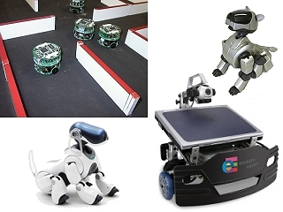
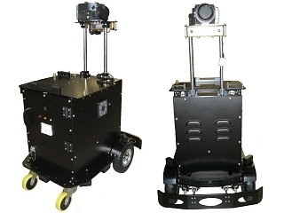
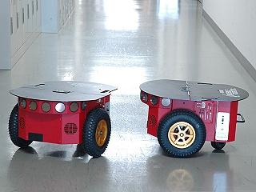
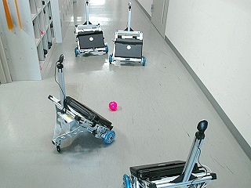
長尾研には様々なロボットがあり，研究に自由に用いることができます． 超小型ロボット群（写真上段左上），全部で10台以上ある小型移動ロボット（写真上段左側・下段）を使ってマルチエージェントの協調行動の学習，自律巡回による環境認識，異常物・不審者検知や非破壊検査などの研究を行っています． また，中型ロボット（写真上段右側，特注）では静止・移動障害物の回避，3次元マップ生成，屋内・屋外自律巡回警備などを扱います． さらにロボットアームや移動台車，自動車など，あらゆる機械の知能化が研究対象です．
実験装置
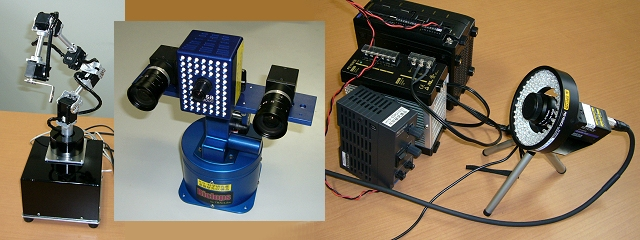
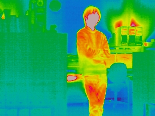
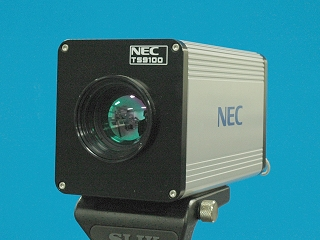
長尾研には様々な実験装置があり，研究に自由に用いることができます． 写真上段は，フレキシブルマニピュレータ，３次元距離カメラとステレオカメラ，画像検査汎用機です． これら以外にもレーザセンサ，高解像度カメラ，高速度カメラなどがあります． 写真下段右側は遠赤外線カメラであり，同左側はそれにより取得した熱画像の例です． 人体やPCの温度が周囲より高いことが確認できます． 各種ディジタルカメラ，ディジタルビデオカメラは台数が分らない位たくさんあります．
全周囲カメラ
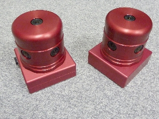
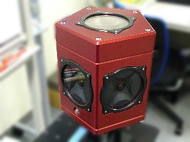
長尾研には全周囲カメラ(株)ビュープラス製Ladybug2×２台（左側）， Ladybug3×１台（右側）があり，Googleストリートビューのような全方向の画像取得を容易に 行うことができます．３次元環境認識などの実験に用います．
乗用移動台車
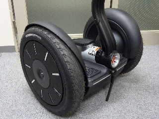
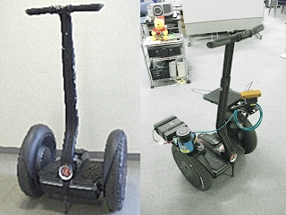
長尾研では３次元環境認識の実験に用いるための人が乗って移動することができる乗用移動台車として， Segway を２台保有しています．レーザーレンジファインダやステレオカメラを搭載して周囲の環境を認識し，不審者や不審物の自動検知を行います．
メディアベンチャー準備室
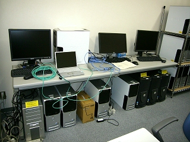
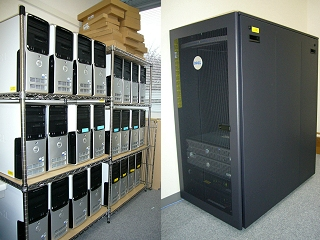
複数台のGPU-PCによるクラスタシステム（超高速進化的画像処理システム），サーバなどの高速計算機システムが置かれています． また，計算能力が必要な場合は共用のPCを何台でも計算に利用することができます． 共用のノートＰＣも多数保有しています．
共同研究推進センター内実験室
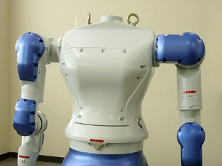
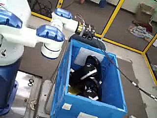
企業との共同研究実施のため，有料でセンターから借用することができます．以前の共同研究では右に示す双腕ロボット（写真）を用いていました．
情報系共用サーバ室
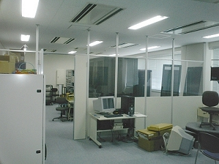
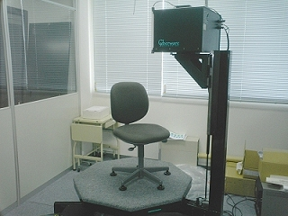
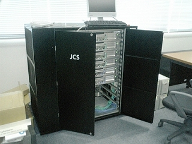
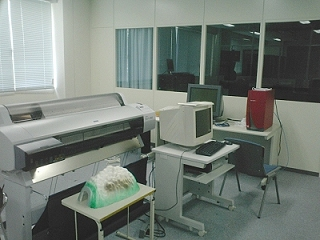
環境情報の情報系研究室共用のサーバ室です．大型のサーバ群（左上の写真）や，３次元入力装置（右上の写真）が置かれています．左下の写真は長尾研のＰＣクラスタ（多数のCPUから構成される高速演算装置）です．また，右下の写真は共用の大型プリンタです．
情報系共用立体映像表示室
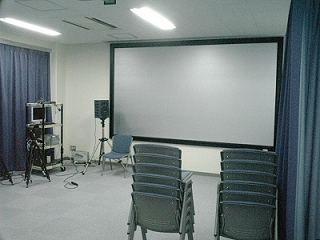
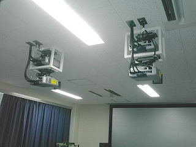
サーバ室に隣接する立体映像室には，偏光を保存して反射するスクリーンと，大小５台の液晶プロジェクタからなる立体映像表示システムがあります．サイバースペースやバーチャルリアリティ系の研究に用いられます．
情報系共用教官会議室
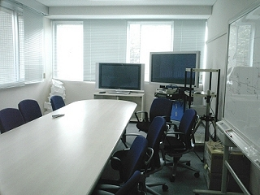
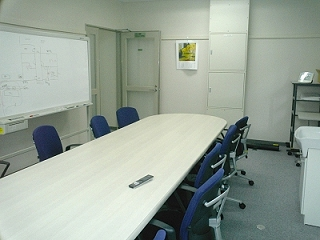
教官が参加するオフィシャルな会議をするスペースであり，大型表示装置などのメディア系設備が完備しています．
机・椅子など
机 ：長尾研の学生机は，計算機の使用を前提とした幅120cm・奥行80cmを基準としており，広々としています．博士後期課程に進学するとさらに広いスペースを使うことができます．
脇机など ：さらに個別の脇机などが完備されており，参考書や文房具などの収納が楽になっています．
椅子 ：椅子を研究環境の一部とみなす考え方に基づいて，全て背を任意の位置で固定できるリクライニングタイプです．
計算機
各自，自分専用のコンピュータを２～３台，多い人は５台以上使用しています．共用の計算機やノートパソコンも多数あります．また，計算機の追加購入のサイクルも非常に早く，常に最新のマシンが導入されています．研究上，計算パワーが必要なら，予算が許す限り何台でも購入してもらえます．
表示装置
各自に大型の液晶ディスプレイを２台以上配布．中には同時に３台以上使用している学生も居ます．これも必要なら何台でも利用することができます．
ノートＰＣ
博士後期課程学生には１人１台のノートパソコンを貸与．また，博士後期課程への進学を決定した博士前期課程学生や，企業との共同研究に関連する仕事を担当している学生にも貸与されます．
外部記憶装置
希望者全員にUSB接続の小型大容量ハードディスク，USBフラッシュメモリを貸与．自宅と研究室間のデータ交換を容易に．また，共用の外付けMO/CD/DVD-RW装置などを多数完備．定期的なバックアップも容易．
周辺装置
イメージスキャナ，ディジタルカメラ，ディジタルビデオカメラ，CCDカメラ，全周囲カメラ，赤外線カメラ，測距カメラ（レンジファインダ），マイクロスコープなどの各種画像入力用装置や色彩色度計などの色彩工学系装置を完備．いつでも使いたいときに使うことができます．ミーティング用の小型／近距離投影用液晶プロジェクタも多数所有．超小型～中型自律ロボットなどの共用マシンも充実しています．
プリンタ
各居室ごとにカラーコピー機能付きフルカラーレーザプリンタ，モノクロレーザプリンタを設置しており，これらはネットワークを介して誰でもすぐに利用することができます．特に第一研究室の大型プリンタは資料のホチキス止めなども全自動の優れものです．
ネットワーク
全てのマシンが研究室内サブネットワークを介して学内LANに接続され，E-mailはもちろん，研究に関するインターネット閲覧，データ，プログラムの高速なダウンロードを常時行なうことができます．ウィルス対策も万全です．
ＰＣクラスタシステム
進化計算など高速な演算を必要とする場合のため，PCクラスタを複数種類設置．通常のパーソナルコンピュータの数十倍の高速な計算環境を提供．
参考文献・図書など
研究に関連する基礎知識を学ぶための各種参考書などの書籍（和文・英文），国際会議予稿，市販の経済系データなどが研究室に完備されています．また，毎月，多数の学会誌などの最新の文献を閲覧可能です．研究室で購読していない学会誌などが研究上必要になった場合，長尾教授に相談すればほとんどの場合すぐに購入してもらえます．特に書籍については，学生からのリクエストに100%応えてもらえます．